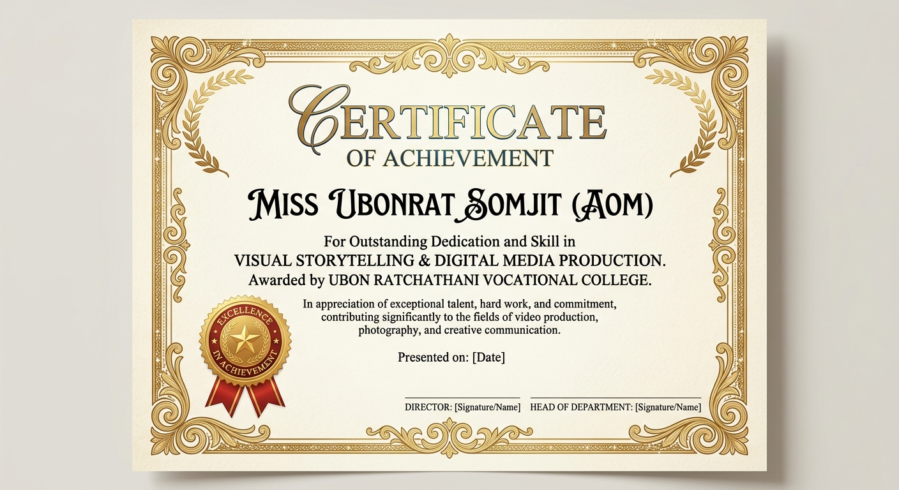

ประวัติส่วนตัว
ดิฉันนางสาวอุบลรัตน์ สมจิตต์ ชื่อเล่น AOM
กำลังศึกษาอยู่ระดับชั้น ปวช.2
ความชอบส่วนตัว: ชอบวาดภาพ, ฟังเพลง, อ่านหนังสือ, ดูซีรีส์
ความสามารถส่วนตัว: ถ่ายภาพ, เล่นกีฬา, เล่นดนตรี, ตัดต่อ
"รู้แค่นี้แหละไม่บอกเยอะหรอก ข้าน้อยมีนามว่าบัวงามอิอิ!!!"
ทักษะ
- การสื่อสารด้วยภาพและเทคโนโลยี (Tech-Visual Storytelling): ใช้ความเข้าใจทางเทคโนโลยีเป็นฐาน แล้วถ่ายทอดข้อมูลหรืออารมณ์ผ่านภาพ แสง และเสียง ให้เข้าใจง่ายและน่าติดตาม
- การตัดต่อและคุมจังหวะ (Composition & Pacing): คัดสรรข้อมูลจำนวนมาก นำมาจัดลำดับใหม่ในโปรแกรมตัดต่อให้ออกมาเป็นเรื่องราวที่มีจังหวะลงตัว
- ความยืดหยุ่นและการทำงานเป็นทีม: ประยุกต์ทักษะจากการเล่นกีฬามาใช้ในการปรับตัวรับความท้าทาย และประสานงานกับทีมงานต่างสายงานได้อย่างราบรื่น
ผลงาน
🎬 หนังสั้นและวิดีโอโปรดักชัน
หน้าที่: [ระบุตำแหน่ง เช่น ถ่ายทำ/ตัดต่อ/กำกับ]
รายละเอียด: หนังสั้นเรื่อง [ระบุชื่อเรื่อง] ที่สื่อสารประเด็น [ระบุเนื้อหา]
📸 คลังภาพถ่ายเล่าเรื่อง (Visual Portfolio)
สไตล์: บันทึกมุมมองผ่านเลนส์ [ระบุสไตล์ เช่น Street / Portrait / Event]
รายละเอียด: สะท้อนเรื่องราวและความรู้สึกหลังกล้อง
ใบประกาศนียบัตร
หัวข้อ: เกียรติบัตรเข้าร่วม/ได้รับรางวัล [ใส่ชื่อรางวัล เช่น เข้าร่วมการแข่งขัน]
ทักษะ: [ใส่ชื่อทักษะ เช่น พัฒนาเว็บไซต์ / หนังสั้น]
หน่วยงานที่มอบ: [ใส่ชื่อผู้มอบ เช่น วิทยาลัยอาชีวศึกษาอุบลราชธานี / ระดับภาค]
"พิสูจน์ความสามารถในการแก้ปัญหาเฉพาะหน้า การทำงานร่วมกับทีม และการประยุกต์ใช้ทักษะความรู้ภายใต้เวลาที่กำหนด"

งานอดิเรก
- 🍿 ชมซีรีส์และวิเคราะห์บท: พักผ่อนพร้อมกับซึมซับการสร้างตัวละครและการลำดับภาพเพื่อสร้างแรงบันดาลใจใหม่ๆ
- 🏀 เล่นกีฬาและออกกำลังกาย: บริหารร่างกายและจิตใจ ฝึกความว่องไว และสร้างสมดุลให้ชีวิต
ติดต่อ
🤝 ยินดีพูดคุยเพื่อสร้างสรรค์ผลงานคุณภาพด้วยกัน:
อีเมล ## ช่องทางติดต่อ: [ระบุข้อมูล ahhhhhh_09]